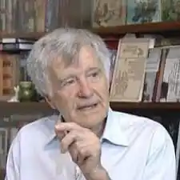

Народився 22 лютого 1939 р. у родині науковців (батьки: Олександр Вікторович Топачевський та Марія Флоріанівна Макаревич). Закінчив факультет журналістики Київського державного університету ім. Т. Г. Шевченка (1961).
Працював на Сахаліні кореспондентом газети "Утро Родины" (1961-63); на Закарпатті кореспондентом газети "Колгоспне життя" (1963-64).
Від 1964 — у Києві: завідувач відділу газети "Комсомольское знамя" (1964-71); редактор сценарного відділу української студії хронікально-документальних фільмів та сценарного відділу київської кіностудії науково-популярних фільмів (1971-73); член сценарної колегії Державного комітету кінематографії (Держкіно) УРСР (1973-88); начальник відділу формування фільмофонду Міністерства культури і мистецтв України (1993-98), де опікувався збереженням спадщини українського кіно. Член творчих спілок: Національної спілки письменників України (НСПУ), Національної спілки кінематографістів України (НСКінУ), Національної спілки журналістів України (НСЖУ). Коло творчих зацікавлень Андрія Топачевського — природне довкілля, біблеїстика, народознавство, історія наукової думки. Один із засновників в Україні природоохоронного руху в літературі та кіно, послідовно досліджує стосунки людини і природи як єдиний соціально-природний процес. У 1971-92 за сценаріями Андрія Топачевського створені документальні та науково-просвітницькі фільми. Автор сценаріїв, науково-художніх книжок, оповідань, екологічних та культорологічних нарисів (1980-97) у часописах "Київ", "Дніпро", "Вітчизна", "Барвінок". Автор публіцистичних статей у газетах "Дзеркало тижня", "День", "Літературна Україна" (1999—2015).